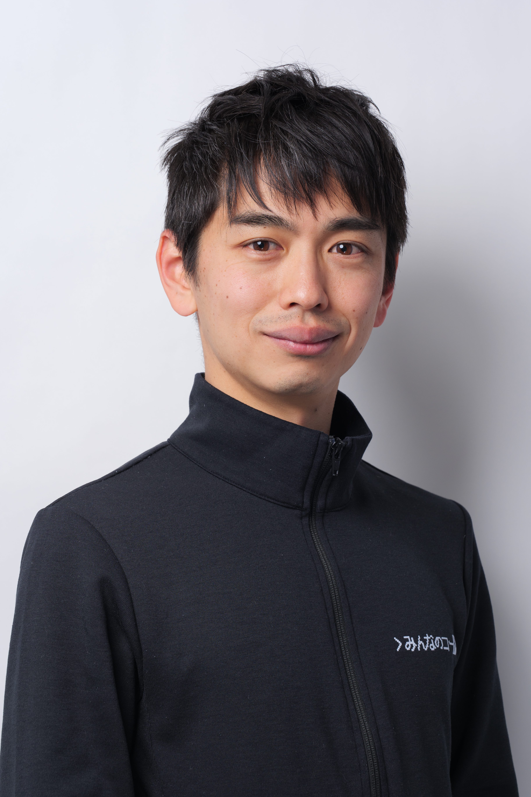

International Computer Science Education Consortium
"A world where every student is empowered through education to thrive in the digital era."

AI is transforming our societies at an unprecedented pace. While every country’s education system is striving to keep up, the speed and approach differ widely.
After leading Code for Everyone for ten years in Japan and engaging with international education leaders, I have learned that the most effective way to move forward is to learn from countries that have started earlier, and adapt their experiences to their own context.
ICSEC will serve as a community of international education leaders who learn from each other, share their insights, and collectively envision “a world where every student is empowered through education to thrive in the digital era.”
By sharing our successes and lessons learned. We can help the next generation of education leaders adapt build systems that support learned within their own cultural environment.
A meeting of minds with a shared passion. The first conversation: "What if we could build a regional community for CS education?"
Las Vegas (CSEdCon)
We proved that this is more than just an idea. We built a true community, connected across borders.
Tokyo & Sendai
Look at this room. Our community is growing. The passion is stronger than ever. It's time to build a sustainable future for this movement.
Bangkok!
We registered legal entity, however the entity is just a "vessel."
Our community gives it life. The vessel is new. It needs its crew.